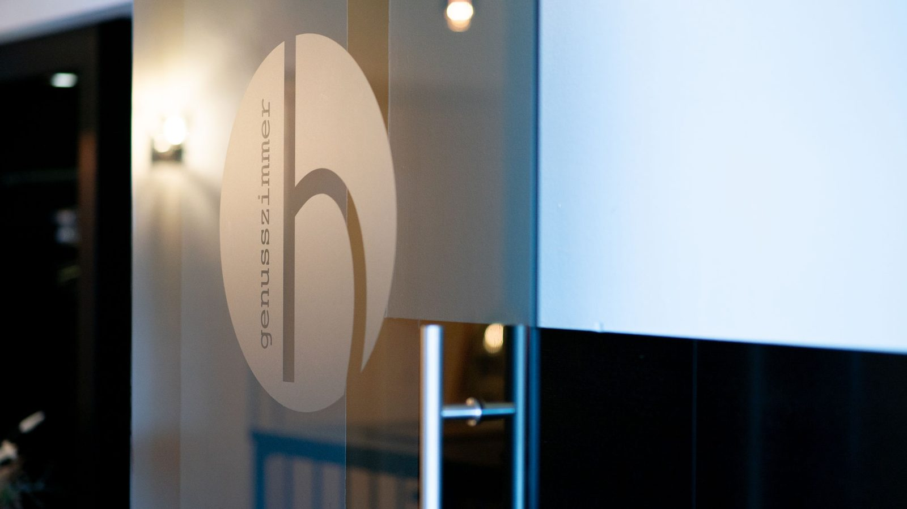

Am Holzpoldlgut 2
4040 Lichtenberg, hoch über Linz. Rufen Sie an, schreiben Sie uns – oder reservieren Sie gleich online.

Restaurant Holzpoldl
Manuel Grabner e.U.
Am Holzpoldlgut 2
4040 Lichtenberg
Oberösterreich
+43 7239 6225
holzpoldl@manuelgrabner.at
www.manuelgrabner.at
Direkt zum Ziel
Für jedes Anliegen gibt es ein eigenes Formular – ohne Umweg über Telefon oder Mailprogramm.
Tisch reservieren
Outdoorküche & Grillage
Catering anfragen
Gutschein bestellen
Bewerbung senden
Folgen Sie uns
Termine, Weinkulinarium, Events im Garten und Neues aus der Küche.
| Mittwoch & Donnerstag | 17:00–23:00 Uhr letzte Reservierung 19:30 |
|---|---|
| Freitag | 18:00–23:00 Uhr letzte Reservierung 19:30 |
| Samstag | 11:30–15:00 Uhr letzte Reservierung 13:30 |
| Sonntag | 11:30–15:00 Uhr letzte Reservierung 14:00 |
| Montag & Dienstag | Ruhetag |
| Feiertage | geöffnet |
| Mittwoch–Freitag | 14:00–22:00 Uhr kalte Küche 14:00–21:00 · warme Küche 16:00–21:00 |
|---|---|
| Samstag | 11:30–22:00 Uhr kalte Küche 11:30–21:00 · warme Küche 11:30–14:00 und 17:00–21:00 |
| Sonntag | 11:30–20:00 Uhr kalte Küche 11:30–19:00 · warme Küche 11:30–18:00 |
So finden Sie uns
Der Holzpoldl liegt in Lichtenberg im Mühlviertel, nördlich von Linz – auf dem ehemaligen Holzpoldlgut. Parkplätze sind beim Haus vorhanden.
Wir binden bewusst keine Fremdkarte ein, die erst nach einer Cookie-Zustimmung erscheint. Die Route öffnet sich auf Wunsch in Ihrer eigenen Karten-App.
Gut zu wissen
Wann sperrt ihr nach der Gourmetpause wieder auf?
Wie reserviere ich am besten?
Wir sind mehr als 15 Personen – geht das?
Was ist der Unterschied zwischen Genussreise und Wirtshauskarte?
Kann man die Miele Outdoorküche buchen?
Gibt es einen Platz für Kinder?
Habt ihr an Feiertagen geöffnet?
Wie bekomme ich einen Gutschein?
Holzpoldl Newsletter
Sie möchten unseren Newsletter erhalten? Dann melden Sie sich hier an. Selbstverständlich können Sie sich jederzeit wieder abmelden.
Wir behandeln Ihre Daten vertraulich. Ihre Daten werden nicht an Dritte weitergegeben – es gilt die Datenschutzerklärung.